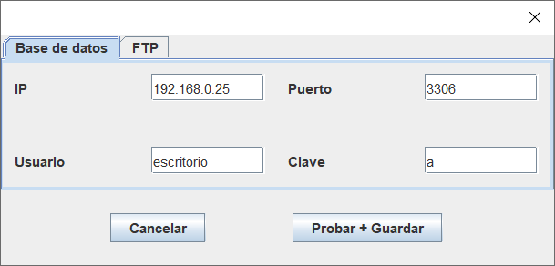

Es probable que al iniciar la aplicación no se pueda conectar a la base de datos.
Para cambiar las direcciones IP, usuarios y contraseñas puedes acceder al menú de Ajustes.

IMPORTANTE: Se validarán todos los datos como un conjunto.